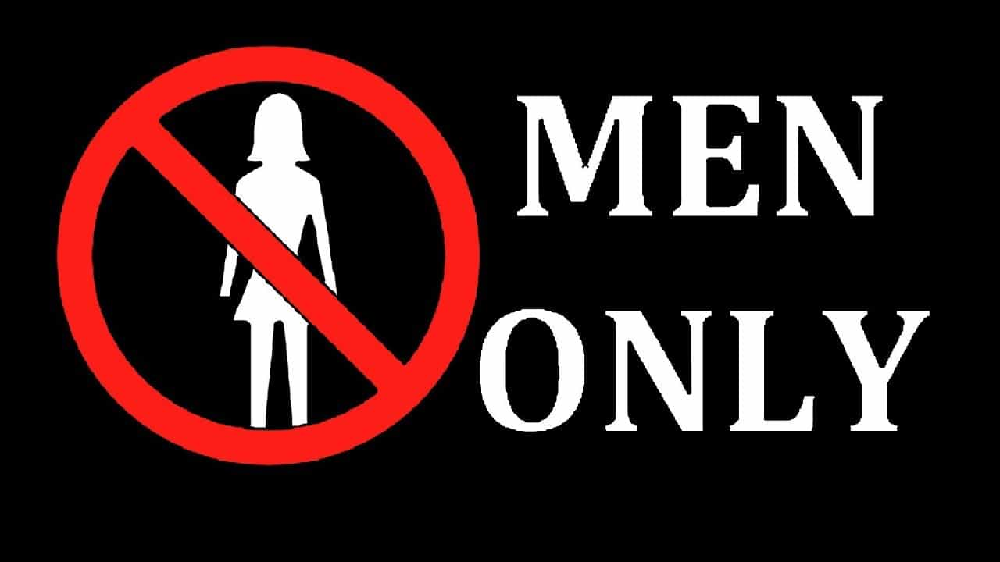

A perfect ten writing for The Guardian, Nicole Silverberg, has unlocked the ancient secrets to male excellence and how to stoke female desire.
No, not really, but at least she tried. Silverberg’s bizarre “self-improvement” list for men implores them to accept “rape culture” by “trusting and believing women” and to apologize whenever a woman asks for it. She also demands that men give women the credit for male ideas and even sacrifice promotions to allow females to climb the corporate ladder. And it only took the Harvey Weinstein sex scandal for her to share it all with us.
Nicole Silverberg basically promises readers that by following her counsel men will gain the respect of women, presumably leading to all sorts of accolades and filling their beds with hot, nubile women. No? Well, again, at least she tried.
After seeing the wisdom of this self-described “comedian,” who is like a milder and less psychotic Laurie Penny, Return Of Kings realizes it has failed you all. We should have told you to grab your scrotum and promptly rip it off from your body, per the effective instructions of Silverberg, and then march to the nearest prison or HR department to report yourself as a compulsive rapist. We promise to be better!
The reality: I would wager that the writer’s real problem, like for many girls declaring the same feminist ideology, is with her own appearance and perhaps some men from her past (real or imaginary) who pumped and dumped her. She wants to lord it over the men weak enough to do what she says, but truly craves a catharsis with the masculine men she knew in the past or could never have in it.
Let’s reflect on the evidence again:
Yeah, we thought so.
Translating feministese
I felt a great disturbance in the Force, as if millions of male voices suddenly cried out in joy and were suddenly silenced by the wisdom of Nicole Silverberg. I fear this perfect 10 has given them the secrets to male excellence and how to stoke female desire.
Here’s a quick translation of some of Silverberg’s pieces of advice:
“Talk to your friend who is ‘kind of a creep’ at work.” = I pretend to be strong, brave, and independent, but it’s better when men do things for me. Plus, the “creep” isn’t Brad Pitt.
“Don’t talk over women.” = Don’t disagree with me and allow me to talk over you incessantly.
“If you are asked to be on a panel/team and see that it’s all men, say something. Maybe even refuse the spot!” = Allow me to take your place even with my subpar work performances.
“Involve women in your creative projects, then let them have equal part in them.” = Let me take the credit for your ideas.
“If a woman tells you that you fucked up, and you feel like shit, don’t put it on that woman to make you feel better. Apologize without qualification and then go away.” = The woman is always right, now apologize to her five times and speak to HR.
“Don’t need to literally witness a man being horrible in order to believe that he’s horrible. Trust and believe women.” = Allegation of flirting = actual rape. Imprison him, no evidence needed.
“Don’t read a list like this and think that most of these don’t apply to you.” = Anyone with testicles can never understand how bad my life is, so just trust me and shut the fuck up, I’m a woman.
This is what happens when you follow advice like Silverberg’s…
Sam Kriss, male feminist.
You end up like Vice writer Sam Kriss by losing your job and publicly outing yourself as a “sexual abuser” just because an anonymous woman called you one.
Kriss has just been fired for following exactly the same advice that Silverberg endorses. He was anonymously accused of sexual assault and then admitted it on Twitter and Medium, paying special attention to the “always apologize to women” and “listen and believe” parts.
Many people on the right will dismiss this with something along the lines of the typical “male feminists are always the real abusers” response. I’m not so convinced. Having peddled leftist and feminist filth for years, a man like Sam Kriss probably fervently believes in the SJW illness he has spewed at others.
A number of men in our societies can be or already are firmly convinced that merely approaching a woman is a veritable form of sexual harassment, if not sexual assault. Like Kriss, when the proverbial knock at the door comes and they’re amorphously accused of sexual harassment or rape, they will either go along with their own social and legal immolation or lack the tools and confidence to fight it.
This is why, for all the hilarity of what Silverberg has written, there’s a dark undertone to it that we should be aware of and combat.
She writes for a men’s magazine

On a final note, if you needed more of an indication of how feminized “male” spaces have become, look no further than Nicole Silverberg’s involvement with the supposed men’s magazine GQ. With such hard-hitting masculine titles as “Whatever Happened to (Consensual) Sex on Game of Thrones?” and “Every Time DJ Khaled Politely Declined to Wear a Shirt in 2016” (which I shan’t be linking to), we can see that the task of male “self-improvement” is now in safely feminist hands.
A word of caution: taking advice from women about women will not help you. As Sam Kriss hopefully learns one day, all it frequently does is give (feminist) women the ability to try and undo you when they want and how they want.
In the meantime, Nicole Silverberg, Laurie Penny and company should leave it to outlets like Return Of Kings to explain the world of women to men.
Read More: If Feminist Laurie Penny Was Serious About Stopping Rape, She Would Protest Outside Prisons